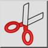

Kivágás
Eszköztár / ikon:


Menü: Szerkesztés > Kivágás
Rövidítés: Ctrl+X (Mac: ⌘X)
Parancsok: cut
Eszköztár / ikon:


A Kivágás eszköz úgy működik, mint a Másolás eszköz, azzal az egyetlen különbséggel, hogy a kijelölt elemek eltávolításra kerülnek az aktuális rajzból, miután a vágólapra másolták őket.